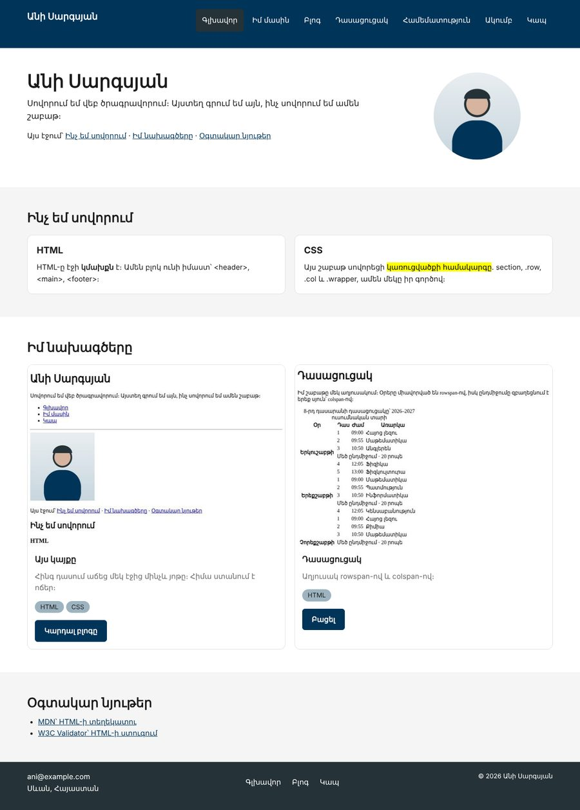
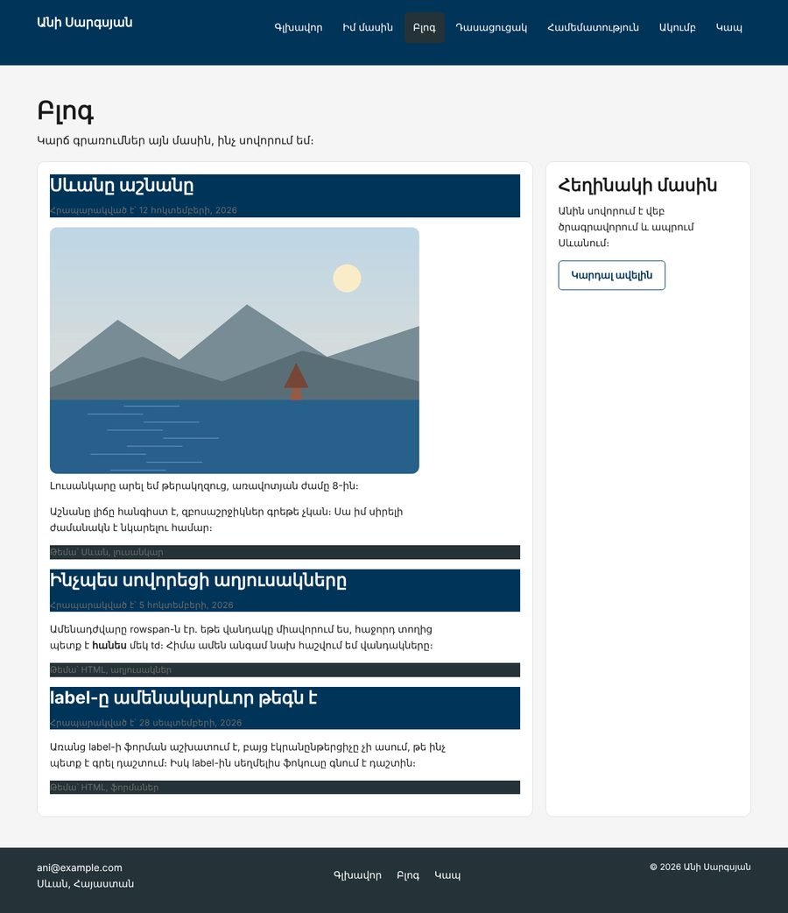

Տնային աշխատանք · HTML Դաս 10 · մինի-նախագիծ
Կայքը վերակառուցում ենք section > .row > .col > .wrapper համակարգով, որը կօգտագործես մինչև դասընթացի վերջ։
Օգտագործիր միայն Դաս 01–10-ը։ .row-ի display: flex-ը այս դասից է, բայց Flexbox-ի հատկությունները (justify-content, align-items, gap) Դաս 11–12-ում են։ Էջը նախատեսված է համակարգչի համար․ ադապտիվությունը Դաս 14-ում է։
Կայքն առաջին անգամ ունի իսկական դասավորություն՝ սյուներ, հավասար բացակներ և ամբողջ լայնությամբ ֆոներ։ Ամեն էջ կառուցված է նույն հինգ շերտով։


Սկսիր Դաս 09-ի քո կայքից։ Եթե այն չունես, վերցրու Դաս 09-ի օրինակը։
.row {
display: flex;
}
.wrapper {
height: 100%;
}
.w-25 { width: 25%; }
.w-30 { width: 30%; }
.w-40 { width: 40%; }
.w-50 { width: 50%; }
.w-60 { width: 60%; }
.w-70 { width: 70%; }
.w-100 { width: 100%; }
/* + w-10, w-20, w-33, w-75, w-80 */section { padding: 40px 0; }
.row { padding: 0 50px; }
.col { padding: 10px; }Ջնջիր Դաս 08-ի main { max-width: 960px; margin: 0 auto; }-ը։ Պատերը հիմա .row-ի գործն են, իսկ ֆոնը կարող է զբաղեցնել ամբողջ լայնությունը։
Սկսիր «Կապ» էջից, այն ամենապարզն է։
<section id="contact">
<div class="row">
<div class="col w-100">
<div class="wrapper">
<h1>Կապ</h1>
</div>
</div>
</div>
<div class="row">
<div class="col w-50">
<div class="wrapper box">
<h2>Գրիր կամ զանգիր</h2>
...
</div>
</div>
<div class="col w-50">
<div class="wrapper box">
<h2>Այլ կայքեր</h2>
...
</div>
</div>
</div>
</section>Ժամանակավորապես ավելացրու .row { outline: 2px solid red; }, .col { outline: 2px solid blue; }, .wrapper { outline: 2px solid green; }։ Կարմիրի և կապույտի միջև՝ 50px պատ, կապույտի և կանաչի միջև՝ 10px բացակ։ Սքրինշոթ արա և ջնջիր outline-ները։
Header-ում երկու սյուն․ w-30 անվան և w-70 մենյուի համար։ Մենյուն աջ տանելու համար՝ text-align: right մենյուի սյան վրա, որովհետև մենյուի կետերը inline-block են։ Footer-ում երեք սյուն։
Վերակառուցիր բոլոր էջերը content.md-ի աղյուսակով։ Ամեն section-ում՝ մեկ կամ մի քանի .row, ամեն սյան մեջ՝ .wrapper։
Գլխավոր էջի քարտը դիր անմիջապես .col-ի մեջ և տուր նրան նաև wrapper դասը՝ <article class="wrapper card">։ Դաս 08-ի display: inline-block, width և margin-ը ջնջիր․ լայնությունը հիմա սյունն է որոշում։
Մի քարտի տեքստը դարձրու երեք անգամ ավելի երկար։ Երկու քարտն էլ կմնան նույն բարձրության, որովհետև .row-ը flex է, իսկ .wrapper-ը՝ height: 100%։ Հանիր wrapper դասը մեկ քարտից և համեմատիր։
main > section > .row > .col > .wrappersection ունի id.col ունի ուղիղ մեկ .wrapper.row-ում 100% էsection-ի կամ .wrapper-ի վրա, երբեք .col-ի.row-ը և .col-ը միայն չափեր ունեն| Սխալ | Ինչպես ուղղել |
|---|---|
| Ֆոնով բլոկները կպած են իրար, բացակ չկա | Ֆոնը դրված է .col-ի վրա։ .col-ի padding-ը ֆոնի ներսում է, ուստի բացակը անհետանում է։ Ֆոնը տեղափոխիր .wrapper-ի վրա |
| Մեկ բլոկ ավելի կարճ է հարևաններից | Այդ սյան մեջ .wrapper-ը բացակայում է |
| Վերջին սյունը տեղափոխվել է նոր տող կամ դուրս է եկել | Լայնությունների գումարը 100%-ից ավելի է |
| Հեռախոսում ամեն ինչ շատ նեղ է | Սպասելի է․ ադապտիվ լայնությունները (w-md-*) Դաս 14-ում են |
Սրանք Դաս 10-ի տնային աշխատանքի կետերն են։ «մինի-նախագծում» նշվածները արդեն կատարել ես վերևի քայլերում, մնացածը կատարիր առանձին ֆայլերում կամ նույն թղթապանակում։
global.css-ում .row, .wrapper և բոլոր .w-* դասերը։ մինի-նախագծումmain.css-ում section-ի, .row-ի և .col-ի չափերը։ մինի-նախագծումw-25)։ Ստուգիր, որ բացակները հավասար են։ մինի-նախագծումw-70 և w-30։ մինի-նախագծումsection, որի ներսում կան երեք տարբեր .row՝ վերնագիր, բովանդակություն, կոճակ։height: 100%-ի ազդեցությունը՝ երեք քարտ շատ տարբեր երկարության տեքստերով, առաջ և հետո։ մինի-նախագծում.col-ի վրա։ Նկարագրիր՝ ինչ կոտրվեց և ինչու։.wrapper-ը մեկ սյան մեջ։ Համեմատիր հարևանների հետ։outline-ներ բոլոր երեք շերտին տարբեր գույներով։ Ուղարկիր սքրինշոթ։ մինի-նախագծումid, ամեն սյուն՝ .wrapper։ մինի-նախագծումԵրբ բաժին 03-ի բոլոր կետերը նշված են, բացիր օրինակը և քո էջը կողք կողքի։ Բացիր երկուսի կոդն էլ խմբագրիչում։ Գտիր մեկ բան, որ դու արել ես այլ կերպ, և մտածիր՝ որն է ավելի հասկանալի և ինչու։ Քո լուծումը կարող է տարբերվել և լինել ճիշտ։